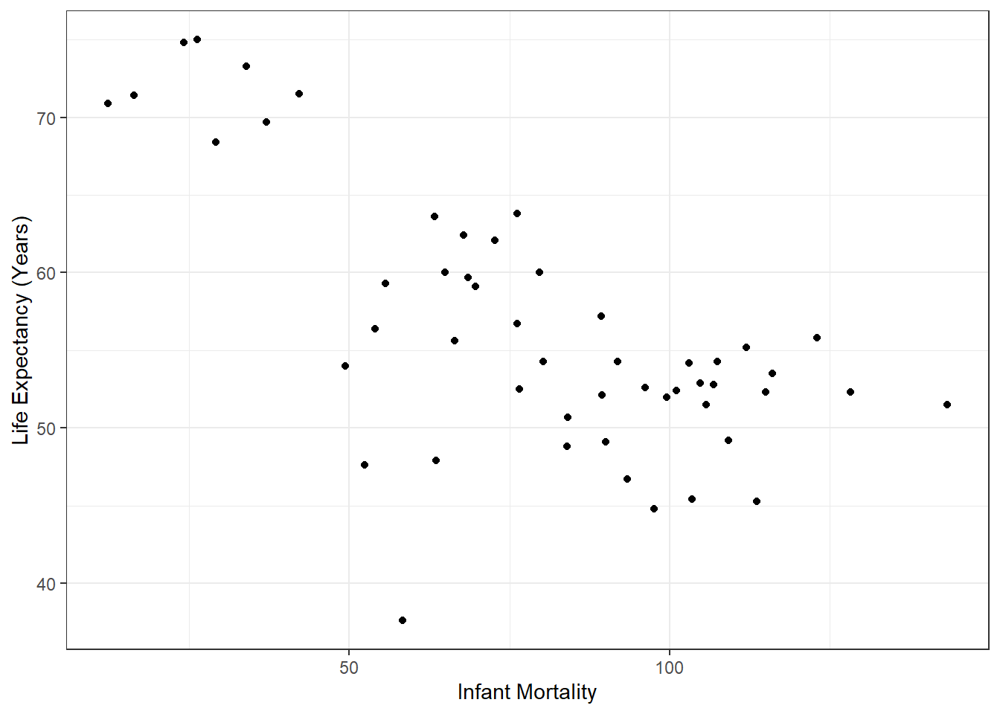
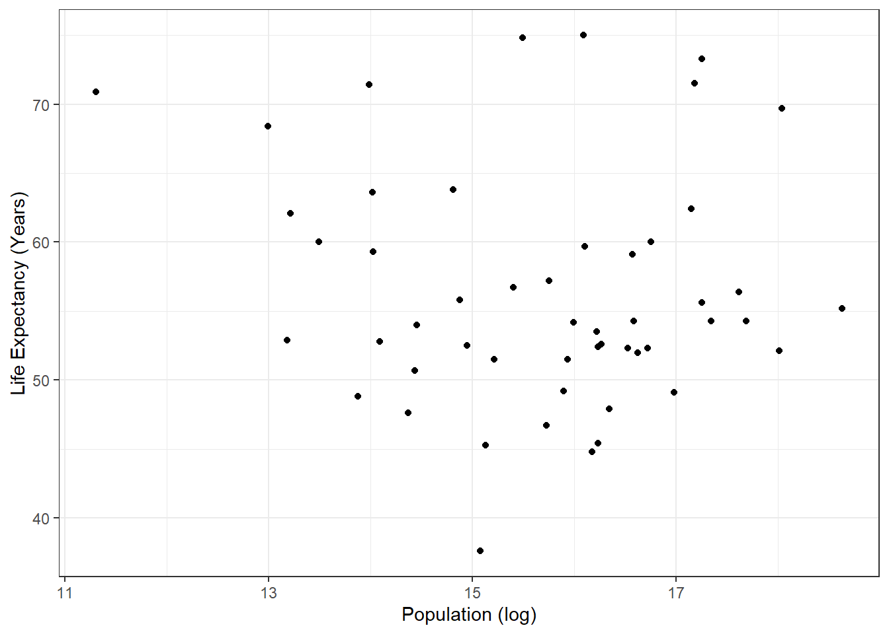
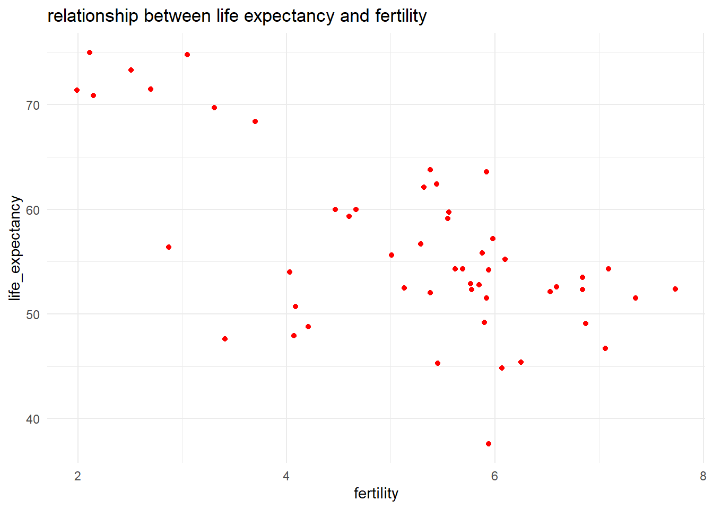
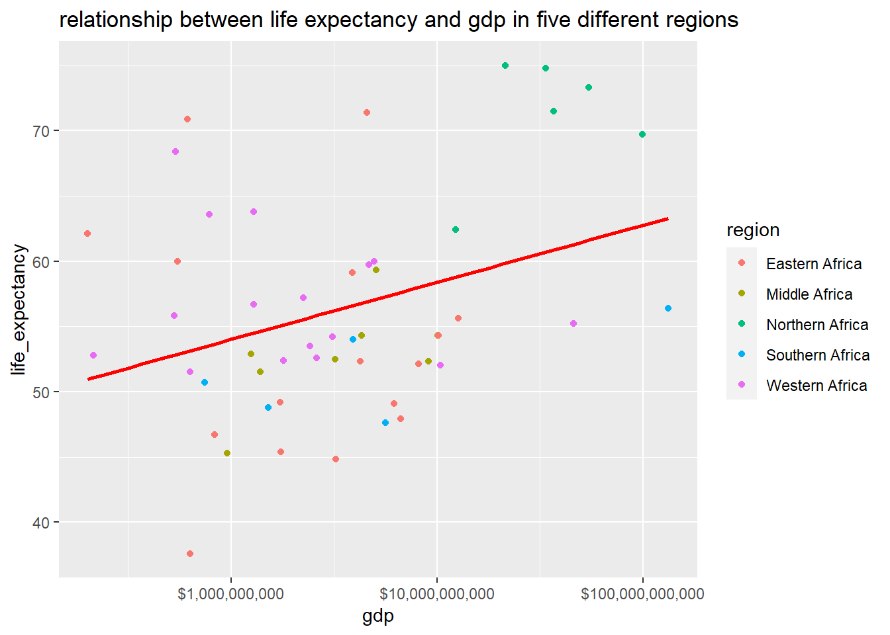

#install and load required packageslibrary(dslabs)#find gapminder data to be used for exercise#help(gapminder)
str(gapminder) #get an overview of the data structure
'data.frame': 10545 obs. of 9 variables:
$ country : Factor w/ 185 levels "Albania","Algeria",..: 1 2 3 4 5 6 7 8 9 10 ...
$ year : int 1960 1960 1960 1960 1960 1960 1960 1960 1960 1960 ...
$ infant_mortality: num 115.4 148.2 208 NA 59.9 ...
$ life_expectancy : num 62.9 47.5 36 63 65.4 ...
$ fertility : num 6.19 7.65 7.32 4.43 3.11 4.55 4.82 3.45 2.7 5.57 ...
$ population : num 1636054 11124892 5270844 54681 20619075 ...
$ gdp : num NA 1.38e+10 NA NA 1.08e+11 ...
$ continent : Factor w/ 5 levels "Africa","Americas",..: 4 1 1 2 2 3 2 5 4 3 ...
$ region : Factor w/ 22 levels "Australia and New Zealand",..: 19 11 10 2 15 21 2 1 22 21 ...
summary(gapminder) #get a summary of the data
country year infant_mortality life_expectancy
Albania : 57 Min. :1960 Min. : 1.50 Min. :13.20
Algeria : 57 1st Qu.:1974 1st Qu.: 16.00 1st Qu.:57.50
Angola : 57 Median :1988 Median : 41.50 Median :67.54
Antigua and Barbuda: 57 Mean :1988 Mean : 55.31 Mean :64.81
Argentina : 57 3rd Qu.:2002 3rd Qu.: 85.10 3rd Qu.:73.00
Armenia : 57 Max. :2016 Max. :276.90 Max. :83.90
(Other) :10203 NA's :1453
fertility population gdp continent
Min. :0.840 Min. :3.124e+04 Min. :4.040e+07 Africa :2907
1st Qu.:2.200 1st Qu.:1.333e+06 1st Qu.:1.846e+09 Americas:2052
Median :3.750 Median :5.009e+06 Median :7.794e+09 Asia :2679
Mean :4.084 Mean :2.701e+07 Mean :1.480e+11 Europe :2223
3rd Qu.:6.000 3rd Qu.:1.523e+07 3rd Qu.:5.540e+10 Oceania : 684
Max. :9.220 Max. :1.376e+09 Max. :1.174e+13
NA's :187 NA's :185 NA's :2972
region
Western Asia :1026
Eastern Africa : 912
Western Africa : 912
Caribbean : 741
South America : 684
Southern Europe: 684
(Other) :5586
class(gapminder) #determine the type of object gapminer is
[1] "data.frame"
Process Data and Plotting
#save all data to "data"data = gapminder# subset based on Continent == AfricaafricaData = data[ which(data$continent=="Africa"), ]str(africaData) #get an overview of the data structure
'data.frame': 2907 obs. of 9 variables:
$ country : Factor w/ 185 levels "Albania","Algeria",..: 2 3 18 22 26 27 29 31 32 33 ...
$ year : int 1960 1960 1960 1960 1960 1960 1960 1960 1960 1960 ...
$ infant_mortality: num 148 208 187 116 161 ...
$ life_expectancy : num 47.5 36 38.3 50.3 35.2 ...
$ fertility : num 7.65 7.32 6.28 6.62 6.29 6.95 5.65 6.89 5.84 6.25 ...
$ population : num 11124892 5270844 2431620 524029 4829291 ...
$ gdp : num 1.38e+10 NA 6.22e+08 1.24e+08 5.97e+08 ...
$ continent : Factor w/ 5 levels "Africa","Americas",..: 1 1 1 1 1 1 1 1 1 1 ...
$ region : Factor w/ 22 levels "Australia and New Zealand",..: 11 10 20 17 20 5 10 20 10 10 ...
summary(gapminder) #get a summary of the data
country year infant_mortality life_expectancy
Albania : 57 Min. :1960 Min. : 1.50 Min. :13.20
Algeria : 57 1st Qu.:1974 1st Qu.: 16.00 1st Qu.:57.50
Angola : 57 Median :1988 Median : 41.50 Median :67.54
Antigua and Barbuda: 57 Mean :1988 Mean : 55.31 Mean :64.81
Argentina : 57 3rd Qu.:2002 3rd Qu.: 85.10 3rd Qu.:73.00
Armenia : 57 Max. :2016 Max. :276.90 Max. :83.90
(Other) :10203 NA's :1453
fertility population gdp continent
Min. :0.840 Min. :3.124e+04 Min. :4.040e+07 Africa :2907
1st Qu.:2.200 1st Qu.:1.333e+06 1st Qu.:1.846e+09 Americas:2052
Median :3.750 Median :5.009e+06 Median :7.794e+09 Asia :2679
Mean :4.084 Mean :2.701e+07 Mean :1.480e+11 Europe :2223
3rd Qu.:6.000 3rd Qu.:1.523e+07 3rd Qu.:5.540e+10 Oceania : 684
Max. :9.220 Max. :1.376e+09 Max. :1.174e+13
NA's :187 NA's :185 NA's :2972
region
Western Asia :1026
Eastern Africa : 912
Western Africa : 912
Caribbean : 741
South America : 684
Southern Europe: 684
(Other) :5586
####this section added by Weifan
##did you mean to do below instead of get a summary of gapminder?summary(data)
country year infant_mortality life_expectancy
Albania : 57 Min. :1960 Min. : 1.50 Min. :13.20
Algeria : 57 1st Qu.:1974 1st Qu.: 16.00 1st Qu.:57.50
Angola : 57 Median :1988 Median : 41.50 Median :67.54
Antigua and Barbuda: 57 Mean :1988 Mean : 55.31 Mean :64.81
Argentina : 57 3rd Qu.:2002 3rd Qu.: 85.10 3rd Qu.:73.00
Armenia : 57 Max. :2016 Max. :276.90 Max. :83.90
(Other) :10203 NA's :1453
fertility population gdp continent
Min. :0.840 Min. :3.124e+04 Min. :4.040e+07 Africa :2907
1st Qu.:2.200 1st Qu.:1.333e+06 1st Qu.:1.846e+09 Americas:2052
Median :3.750 Median :5.009e+06 Median :7.794e+09 Asia :2679
Mean :4.084 Mean :2.701e+07 Mean :1.480e+11 Europe :2223
3rd Qu.:6.000 3rd Qu.:1.523e+07 3rd Qu.:5.540e+10 Oceania : 684
Max. :9.220 Max. :1.376e+09 Max. :1.174e+13
NA's :187 NA's :185 NA's :2972
region
Western Asia :1026
Eastern Africa : 912
Western Africa : 912
Caribbean : 741
South America : 684
Southern Europe: 684
(Other) :5586
Infant Mortality and Life Expectancy
#Subset Africa infant mortality and life expectancyinfantM_LifeE = africaData[c("infant_mortality", "life_expectancy")]str(infantM_LifeE) #get an overview of the data structure
'data.frame': 2907 obs. of 2 variables:
$ infant_mortality: num 148 208 187 116 161 ...
$ life_expectancy : num 47.5 36 38.3 50.3 35.2 ...
#####this section is added by Weifan
### using select function to extract a data frame only include infant mortality and life expectancyinfantM_LifeE2=select(africaData, infant_mortality,life_expectancy)###get an overview of the data structurestr(infantM_LifeE2)
'data.frame': 2907 obs. of 2 variables:
$ infant_mortality: num 148 208 187 116 161 ...
$ life_expectancy : num 47.5 36 38.3 50.3 35.2 ...
###get a summary of the datasummary(infantM_LifeE2)
infant_mortality life_expectancy
Min. : 11.40 Min. :13.20
1st Qu.: 62.20 1st Qu.:48.23
Median : 93.40 Median :53.98
Mean : 95.12 Mean :54.38
3rd Qu.:124.70 3rd Qu.:60.10
Max. :237.40 Max. :77.60
NA's :226
summary(infantM_LifeE)#get a summary of the data
infant_mortality life_expectancy
Min. : 11.40 Min. :13.20
1st Qu.: 62.20 1st Qu.:48.23
Median : 93.40 Median :53.98
Mean : 95.12 Mean :54.38
3rd Qu.:124.70 3rd Qu.:60.10
Max. :237.40 Max. :77.60
NA's :226
Plot life expectancy as a function of infant mortality
# Plot life expectancy as a function of infant mortality ggplot(infantM_LifeE, aes(x=infant_mortality, y=life_expectancy)) +geom_point()+xlab("Infant Mortality")+ylab("Life Expectancy (Years)")+theme_bw()
#Subset Africa population and life expectancypop_LifeE = africaData[c("population", "life_expectancy")]str(pop_LifeE) #get an overview of the data structure
'data.frame': 2907 obs. of 2 variables:
$ population : num 11124892 5270844 2431620 524029 4829291 ...
$ life_expectancy: num 47.5 36 38.3 50.3 35.2 ...
summary(pop_LifeE) #get a summary of the data
population life_expectancy
Min. : 41538 Min. :13.20
1st Qu.: 1605232 1st Qu.:48.23
Median : 5570982 Median :53.98
Mean : 12235961 Mean :54.38
3rd Qu.: 13888152 3rd Qu.:60.10
Max. :182201962 Max. :77.60
NA's :51
Plot life expectancy as a function of population
# Plot life expectancy as a function of populationggplot(pop_LifeE, aes(x=log(population), y=life_expectancy)) +geom_point() +xlab("Population (log)")+ylab("Life Expectancy (Years)")+theme_bw()
# subset year 2000y_2000 = africaData[ which(africaData$year=="2000"), ]summary(y_2000) #get a summary of the data
country year infant_mortality life_expectancy
Algeria : 1 Min. :2000 Min. : 12.30 Min. :37.60
Angola : 1 1st Qu.:2000 1st Qu.: 60.80 1st Qu.:51.75
Benin : 1 Median :2000 Median : 80.30 Median :54.30
Botswana : 1 Mean :2000 Mean : 78.93 Mean :56.36
Burkina Faso: 1 3rd Qu.:2000 3rd Qu.:103.30 3rd Qu.:60.00
Burundi : 1 Max. :2000 Max. :143.30 Max. :75.00
(Other) :45
fertility population gdp continent
Min. :1.990 Min. : 81154 Min. :2.019e+08 Africa :51
1st Qu.:4.150 1st Qu.: 2304687 1st Qu.:1.274e+09 Americas: 0
Median :5.550 Median : 8799165 Median :3.238e+09 Asia : 0
Mean :5.156 Mean : 15659800 Mean :1.155e+10 Europe : 0
3rd Qu.:5.960 3rd Qu.: 17391242 3rd Qu.:8.654e+09 Oceania : 0
Max. :7.730 Max. :122876723 Max. :1.329e+11
region
Eastern Africa :16
Western Africa :16
Middle Africa : 8
Northern Africa : 6
Southern Africa : 5
Australia and New Zealand: 0
(Other) : 0
plot life expectancy as a function of infant mortality
# Plot life expectancy as a function of infant mortality ggplot(y_2000, aes(x=infant_mortality, y=life_expectancy)) +geom_point() +xlab("Infant Mortality")+ylab("Life Expectancy (Years)")+theme_bw()

Plot life expectancy as a function of infant mortality
# Plot life expectancy as a function of infant mortality ggplot(y_2000, aes(x=log(population), y=life_expectancy)) +geom_point() +xlab("Population (log)")+ylab("Life Expectancy (Years)")+theme_bw()

#####This section added by Weifan
###find out if there is any missing value of fertility and gdp in year 2000summary(y_2000)
country year infant_mortality life_expectancy
Algeria : 1 Min. :2000 Min. : 12.30 Min. :37.60
Angola : 1 1st Qu.:2000 1st Qu.: 60.80 1st Qu.:51.75
Benin : 1 Median :2000 Median : 80.30 Median :54.30
Botswana : 1 Mean :2000 Mean : 78.93 Mean :56.36
Burkina Faso: 1 3rd Qu.:2000 3rd Qu.:103.30 3rd Qu.:60.00
Burundi : 1 Max. :2000 Max. :143.30 Max. :75.00
(Other) :45
fertility population gdp continent
Min. :1.990 Min. : 81154 Min. :2.019e+08 Africa :51
1st Qu.:4.150 1st Qu.: 2304687 1st Qu.:1.274e+09 Americas: 0
Median :5.550 Median : 8799165 Median :3.238e+09 Asia : 0
Mean :5.156 Mean : 15659800 Mean :1.155e+10 Europe : 0
3rd Qu.:5.960 3rd Qu.: 17391242 3rd Qu.:8.654e+09 Oceania : 0
Max. :7.730 Max. :122876723 Max. :1.329e+11
region
Eastern Africa :16
Western Africa :16
Middle Africa : 8
Northern Africa : 6
Southern Africa : 5
Australia and New Zealand: 0
(Other) : 0
###since there is no missing value in year 2000, we still choose this year to plot life expectancy as a function of fertilityy_2000%>%ggplot(aes(x=fertility,y=life_expectancy,color=region))+geom_point()+geom_smooth(method="lm",se=FALSE,color="green")
`geom_smooth()` using formula = 'y ~ x'

labs(x="fertility",y="life_expectancy", title="relationship between life expectancy and fertility")+theme_minimal()
NULL
###plot life expectancy as a function of gdpy_2000%>%ggplot(aes(x=gdp,y=life_expectancy,color=region))+geom_point()+geom_smooth(method="lm",se=FALSE,color="red")+labs(x="gdp",y="life_expectancy", title="relationship between life expectancy and gdp in five different regions")+scale_x_log10(labels=scales::dollar_format())
`geom_smooth()` using formula = 'y ~ x'

Simple Fit
linear model to fit outcome = life expectancy and predictor = infant mortality
# A tibble: 2 × 5
term estimate std.error statistic p.value
<chr> <dbl> <dbl> <dbl> <dbl>
1 (Intercept) 55.9 1.47 38.1 4.51e-38
2 population 0.0000000276 0.0000000546 0.505 6.16e- 1
this section is added by Weifan
###linear model to predict life expectancy using fertilitylm1=lm(life_expectancy~fertility, data=y_2000)table1=broom::tidy(lm1)%>% knitr::kable(digits=3)###linear model to predict life expectancy using gdplm2=lm(life_expectancy~gdp,data=y_2000)table2=broom::tidy(lm2)%>% knitr::kable(digits=3)table1
term
estimate
std.error
statistic
p.value
(Intercept)
76.075
3.348
22.720
0
fertility
-3.823
0.625
-6.113
0
table2
term
estimate
std.error
statistic
p.value
(Intercept)
55.014
1.247
44.106
0.000
gdp
0.000
0.000
2.516
0.015
Based on the p-values of the linear models, a conclusion can be made that there is a statistical relationship between life expectancy and infant mortality but not life expectancy and population. ###this section is added by Weifan based on the p_values of two models, we can conclude that life expectancy can be predicted by both variables (fertility and GDP)